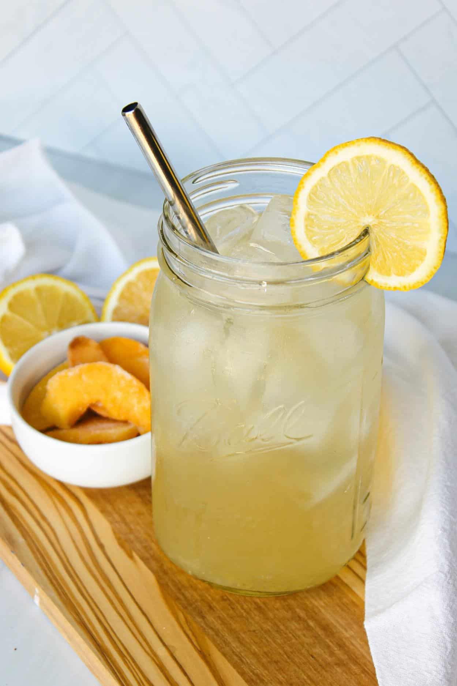

Iced-lemonade recipe

Description
A delicious iced-lemonade that will quench your thirst. Perfect for summer afternoon or really anytime of the day.
The recipe is easy to follow and beginner friendly. So, do not worry.
Ingredients
- 1 cup fresh lemon juice (about 4-6 lemons)
- 1 cup granulated sugar (adjust to taste)
- 4 cups cold water
- Ice cubes
- Lemon slices (for garnish)
- Fresh mint leaves (optional, for garnish)
Steps
- In a pitcher, combine the fresh lemon juice and granulated sugar. Stir until the sugar is dissolved.
- Add 4 cups of cold water to the pitcher and mix well. Adjust the sweetness by adding more sugar or water to taste.
- Fill glasses with ice cubes.
- Pour the lemonade over the ice-filled glasses.
- Garnish with lemon slices and fresh mint leaves, if desired.
- Serve immediately and enjoy your refreshing iced lemonade!